N-D Test Functions T¶
N-D Test Functions T¶TestTubeHolder test objective function.
This class defines the TestTubeHolder global optimization problem. This is a multimodal minimization problem defined as follows:
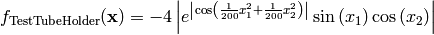
Here,  represents the number of dimensions and
represents the number of dimensions and ![x_i \in [-10, 10]](_images/math/d511ca3206c16bae3e3af3c02835f3fe9fb07286.png) for
for  .
.
Two-dimensional TestTubeHolder function
Global optimum: 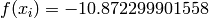 for 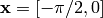
Three Hump Camel test objective function.
This class defines the Three Hump Camel global optimization problem. This is a multimodal minimization problem defined as follows:
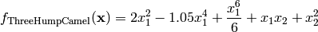
Here, represents the number of dimensions and ![x_i \in [-5, 5]](_images/math/b7a53fa3c9c2f313c2a86c222fdfbbeaf4b5a3ed.png) for .
for .
Two-dimensional Three Hump Camel function
Global optimum:  for
for ![\mathbf{x} = [0, 0]](_images/math/ae446016118c18b04012af8feda9cc5e2e1808a6.png)
Treccani test objective function.
This class defines the Treccani global optimization problem. This is a multimodal minimization problem defined as follows:
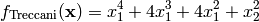
Here, represents the number of dimensions and for .
Two-dimensional Treccani function
Global optimum: for 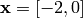 or .
Trefethen test objective function.
This class defines the Trefethen global optimization problem. This is a multimodal minimization problem defined as follows:
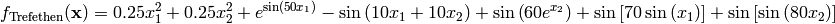
Here, represents the number of dimensions and for .
Two-dimensional Trefethen function
Global optimum: 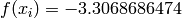 for 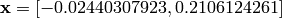
Trid test objective function.
This class defines the Trid global optimization problem. This is a multimodal minimization problem defined as follows:
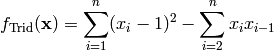
Here, represents the number of dimensions and ![x_i \in [-20, 20]](_images/math/026a917a812dbaef4e7a8ea87e9963bb111e2644.png) for 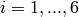.
for 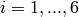.
Global optimum: 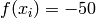 for ![\mathbf{x} = [6, 10, 12, 12, 10, 6]](_images/math/0c89c713f8368e274f7dd77459f2159c71cbb800.png)
Trigonometric 1 test objective function.
This class defines the Trigonometric 1 global optimization problem. This is a multimodal minimization problem defined as follows:
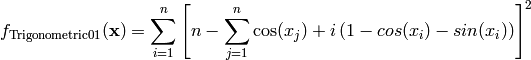
Here, represents the number of dimensions and ![x_i \in [0, \pi]](_images/math/10b9f829ecf73e20ecc5c80159a1d1615d4c0f6a.png) for
for  .
.
Two-dimensional Trigonometric 1 function
Global optimum: for  for
for
Trigonometric 2 test objective function.
This class defines the Trigonometric 2 global optimization problem. This is a multimodal minimization problem defined as follows:
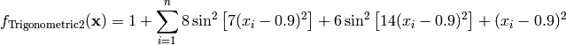
Here, represents the number of dimensions and ![x_i \in [-500, 500]](_images/math/286a33626f115cb9d7e75a098b287cf93b7916e5.png) for .
for .

Two-dimensional Trigonometric 2 function
Global optimum:  for 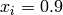 for
for 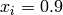 for
Tripod test objective function.
This class defines the Tripod global optimization problem. This is a multimodal minimization problem defined as follows:
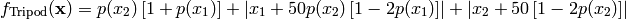
Here, represents the number of dimensions and ![x_i \in [-100, 100]](_images/math/33bdb423b6ec61d9668e76b556c95c96b2bb72ef.png) for .
for .
Two-dimensional Tripod function
Global optimum: for 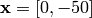